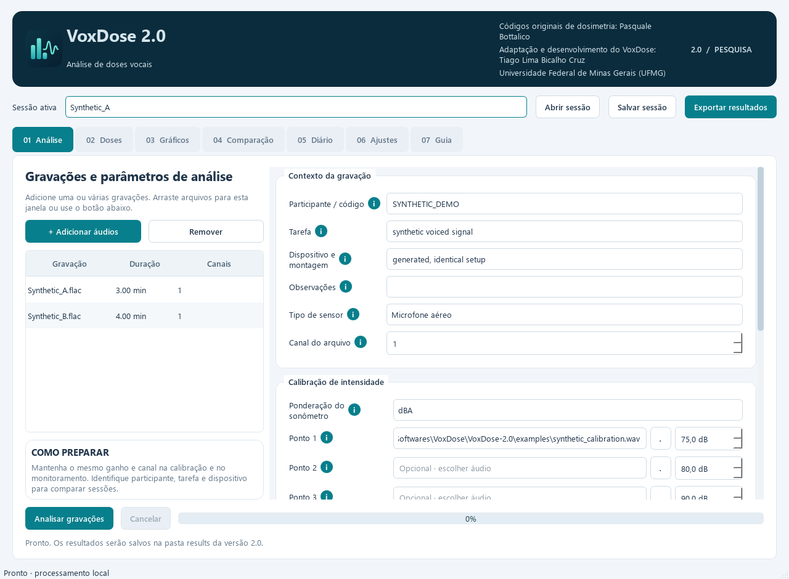
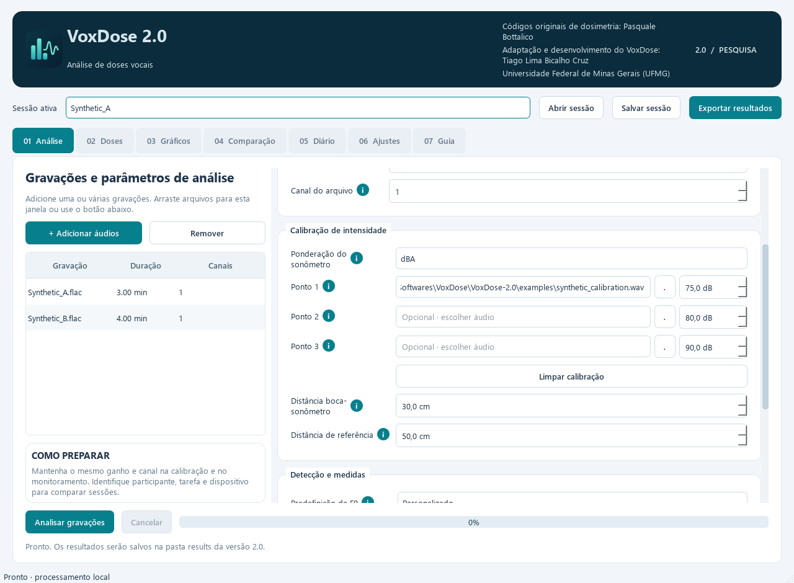
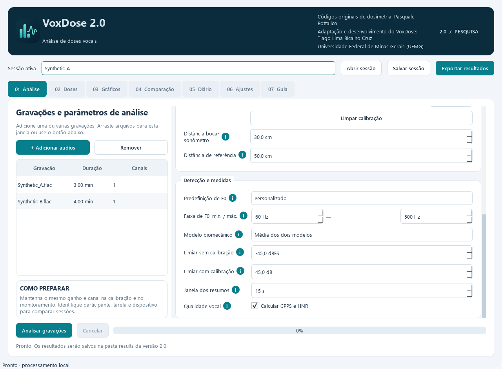
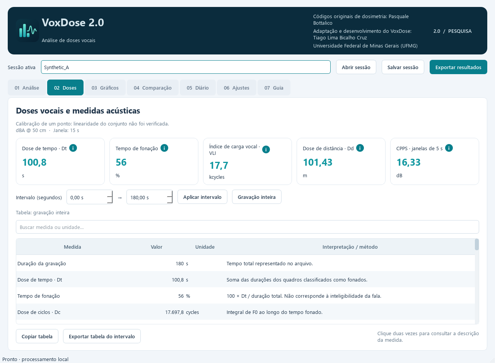
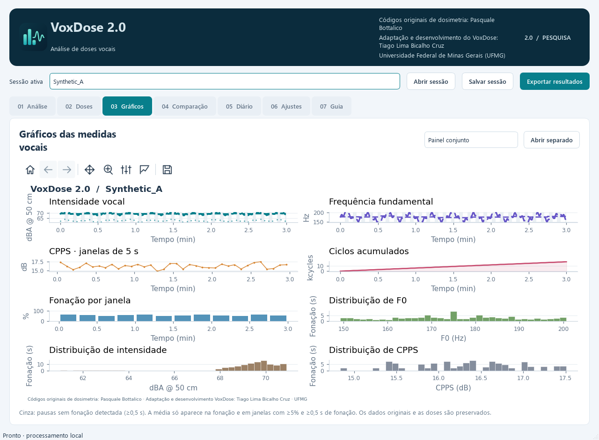
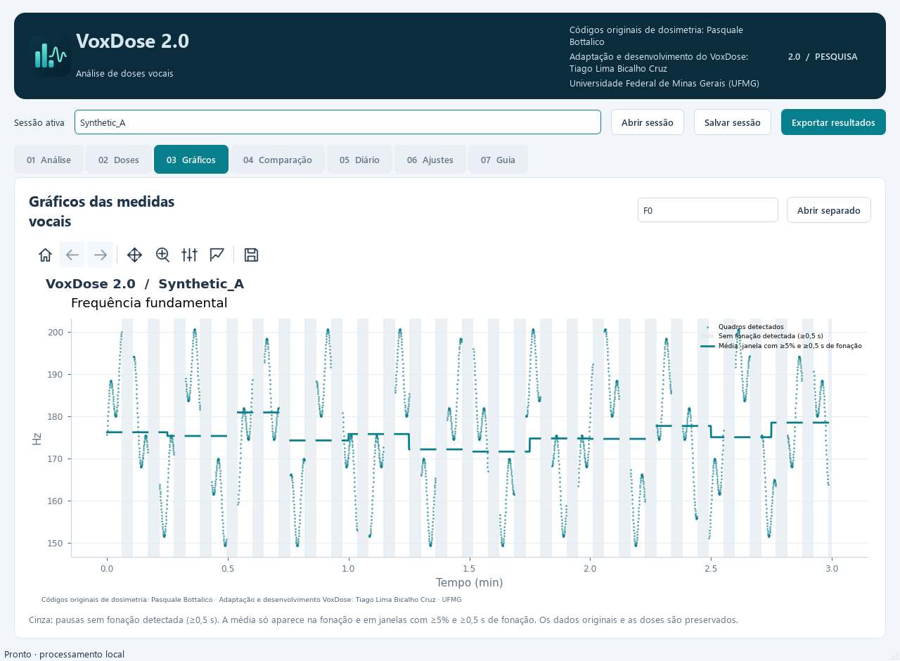
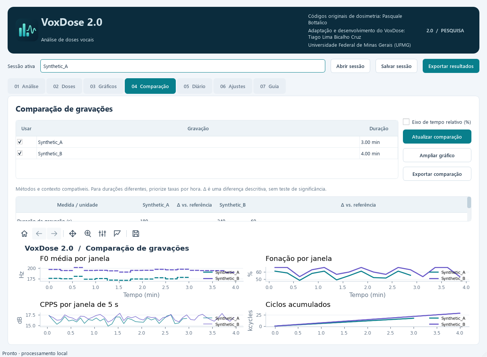
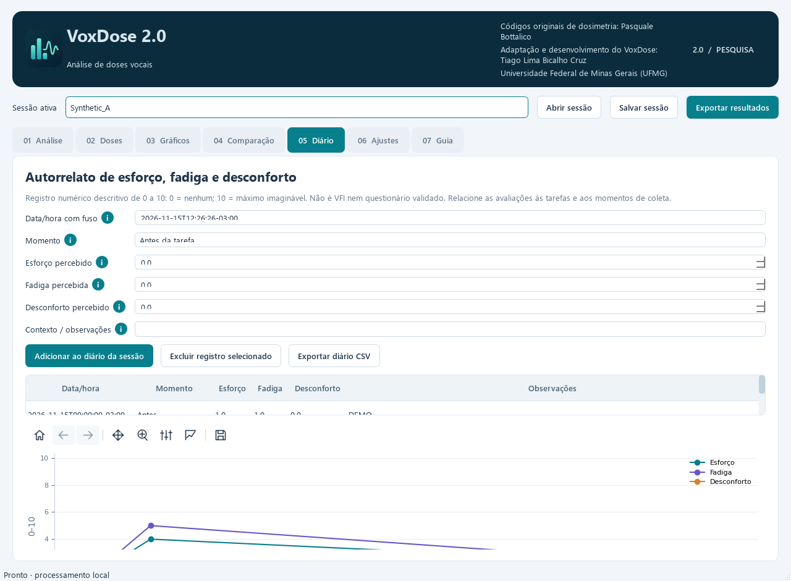
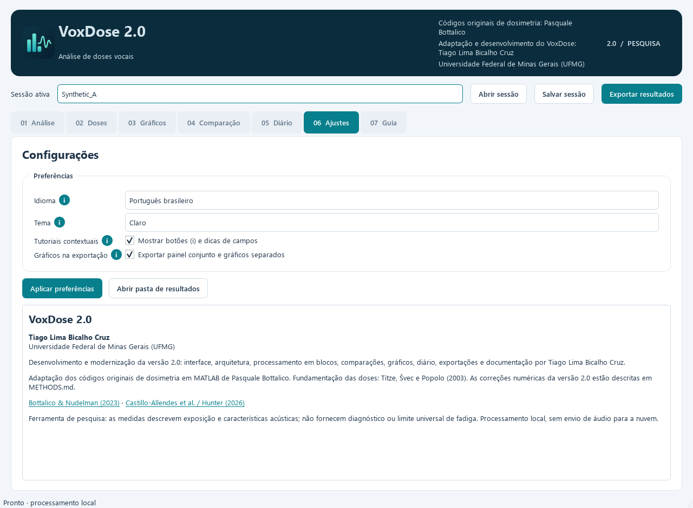

Manual do usuário

Exposição vocal, comparação de sessões e registro perceptivo.
Tiago Lima Bicalho Cruz - Universidade Federal de Minas Gerais (UFMG)
Adaptação dos códigos originais de Pasquale Bottalico. Desenvolvimento e modernização da versão 2.0 por Tiago Lima Bicalho Cruz.
As telas deste manual utilizam sinais e avaliações artificiais, identificados como Synthetic/DEMO. Não são dados clínicos ou valores normativos.
01 / Começar e analisar
No Windows, use o instalador NSIS e abra VoxDose pelo menu Iniciar, ou execute a cópia portátil VoxDose-2.0.exe. Python já está incluído. O idioma inicial é inglês; para português, use Settings > Language > Português brasileiro > Apply preferences. Adicione ou arraste WAV/FLAC, identifique participante, tarefa e dispositivo e configure canal, calibração e F0 antes de analisar.
O pacote de fontes inclui as sessões artificiais examples/Synthetic_A.voxdose e Synthetic_B.voxdose. Abra-as com Abrir sessão para explorar sem recalcular o áudio. Troque a sessão ativa na barra superior.

A fila aceita múltiplos arquivos. Cada análise concluída salva resultados em uma pasta própria.
02 / Calibrar a intensidade
Use uma emissão estável com leitura simultânea do sonômetro. O áudio de calibração e o monitoramento precisam do mesmo canal, ganho e montagem. Evite silêncio, controle automático de ganho e saturação. Escolha A para dBA ou Z para dBZ; não substitua dBC por Z.

Microfone aéreo: 1-3 pontos. Distância = boca-sonômetro. Sem calibração: dBFS; Dd/De/Dr indisponíveis.
03 / Ajustar a detecção
Fala: ponto de partida 60-500 Hz; canto: 50-1200 Hz. Ajuste à voz real. A faixa não define gênero. O modelo biomecânico só altera Dd e De; a média combina os dois ramos históricos. Um quadro exige F0 detectada e nível acima do limiar.

Passe o mouse sobre (i) para ler a explicação, sem clicar nem fechar uma caixa. O detector não separa automaticamente outras pessoas ou artefatos de movimento.
04 / Ler a tabela de doses
A tabela separa valor, unidade e método. Busque medidas, ordene pelas colunas e clique duas vezes para ler a descrição. O intervalo calcula apenas o trecho indicado, com ponderação dos quadros parciais. CPPS/HNR preservam suas janelas originais de 5 s.

Traço indica medida indisponível. As mensagens acima da tabela contextualizam calibração e qualidade.
05 / Guia das medidas (1/3)
Doses e características acústicas descrevem exposição e comportamento. Não há ponto de corte automático para fadiga, dano ou necessidade de repouso.
| Medida | Unidade | Como interpretar |
|---|
| Duração da gravação | s | Tempo total representado no arquivo. |
| Dose de tempo · Dt | s | Soma das durações dos quadros classificados como fonados. |
| Tempo de fonação | % | 100 × Dt / duração total. Não corresponde à inteligibilidade da fala. |
| Dose de ciclos · Dc | cycles | Integral de F0 ao longo do tempo fonado. |
| Índice de carga vocal · VLI | kcycles | Dc dividido por 1000. Unidade: milhares de ciclos, sem divisão por segundo. |
| Dose de distância · Dd | m | Estimativa por modelo da distância vibratória acumulada. Requer SPL Z calibrado. |
| Dissipação por volume · De | J/m³ | Estimativa de energia dissipada por unidade de volume de tecido; não é energia total em joules. |
| Energia radiada · Dr | J | Modelo de radiação esférica, calculado com SPL Z e distância em metros. |
| F0 média | Hz | Média ponderada pela duração, somente nos quadros fonados. |
| Desvio padrão de F0 | Hz | Dispersão de F0 nos quadros fonados. Não inclui zeros artificiais de silêncio. |
| F0 · percentil 10 | Hz | Percentil ponderado pelo tempo de fonação. |
| F0 · mediana | Hz | Mediana ponderada pelo tempo de fonação. |
| F0 · percentil 90 | Hz | Percentil ponderado pelo tempo de fonação. |
| Amplitude P90-P10 de F0 | st | 12 × log2(P90/P10). Amplitude robusta em semitons. |
| SPL Z médio na fonação | dB SPL | Média aritmética dos níveis não ponderados, na distância indicada. Diferente do Leq. |
| Desvio padrão de SPL Z | dB | Dispersão do SPL Z nos quadros fonados. |
05 / Guia das medidas (2/3)
Doses e características acústicas descrevem exposição e comportamento. Não há ponto de corte automático para fadiga, dano ou necessidade de repouso.
| Medida | Unidade | Como interpretar |
|---|
| Leq Z na fonação | dB SPL | Média energética: 10 log10 da média ponderada de 10^(L/10), apenas na fonação. |
| SPL A médio na fonação | dBA | Média dos níveis com filtro A digital. A calibração não certifica o sistema como sonômetro. |
| Leq A na fonação | dBA | Média energética A somente durante fonação; não equivale a LAeq ambiental de toda a sessão. |
| Nível médio exibido | dB | dBFS sem calibração; SPL A quando disponível; caso contrário SPL Z. Consulte a unidade no gráfico. |
| CPPS · janelas de 5 s | dB | Prominência do pico cepstral suavizado via Praat. Janelas originais de 5 s, sem remover pausas; mínimo 20% de fonação. Dependente do protocolo e sensor. |
| HNR · exploratório | dB | Razão harmônico-ruído por autocorrelação. Influenciada pelo ruído, tarefa e sensor; não é medida específica de esforço. |
| Tempo sem fonação detectada | s | Inclui silêncio, sons não vozeados, ruído e possíveis falhas do detector. Não comprova repouso fisiológico. |
| Intervalos sem fonação ≥0,25 s | n | Contagem de segmentos contíguos de pelo menos 250 ms sem fonação detectada. |
| Intervalos sem fonação ≥5 s | n | Intervalos longos no detector. Não devem ser interpretados como recuperação tecidual medida. |
| Maior intervalo sem fonação | s | Maior duração contígua sem fonação detectada. |
| Trecho fonado · mediana | s | Duração mediana de segmentos fonados contíguos, sem unir pausas. |
| Maior trecho fonado | s | Maior segmento contíguo de quadros fonados. |
| Amostras próximas da saturação | % | Percentual de amostras digitais com magnitude ≥0,999 da escala completa. |
| Dose de ciclos · Dc / hora gravada | cycles/h | Total normalizado por hora de gravação, para comparar durações diferentes. |
05 / Guia das medidas (3/3)
Doses e características acústicas descrevem exposição e comportamento. Não há ponto de corte automático para fadiga, dano ou necessidade de repouso.
| Medida | Unidade | Como interpretar |
|---|
| Dose de ciclos · Dc / segundo fonado | cycles/s | Total dividido por Dt. Usar junto ao total, pois descreve intensidade de exposição e não sua duração. |
| Dose de distância · Dd / hora gravada | m/h | Total normalizado por hora de gravação, para comparar durações diferentes. |
| Dose de distância · Dd / segundo fonado | m/s | Total dividido por Dt. Usar junto ao total, pois descreve intensidade de exposição e não sua duração. |
| Dissipação por volume · De / hora gravada | J/m³/h | Total normalizado por hora de gravação, para comparar durações diferentes. |
| Dissipação por volume · De / segundo fonado | J/m³/s | Total dividido por Dt. Usar junto ao total, pois descreve intensidade de exposição e não sua duração. |
| Energia radiada · Dr / hora gravada | J/h | Total normalizado por hora de gravação, para comparar durações diferentes. |
| Energia radiada · Dr / segundo fonado | J/s | Total dividido por Dt. Usar junto ao total, pois descreve intensidade de exposição e não sua duração. |
06 / Gráficos em conjunto
O painel reúne intensidade, F0, CPPS, ciclos acumulados, fonação por janela e distribuições. O eixo é tempo desde o início, em minutos. A média de intensidade é aritmética; o Leq energético está na tabela.

Cinza: pausas ≥0,5 s. Médias só aparecem na fonação e em janelas com ≥5% e ≥0,5 s de fonação. A apresentação preserva os dados e as doses.
07 / Gráficos individuais e ampliados
Escolha um dos 13 tipos no seletor e use Abrir separado. Há HNR, envelope RMS e doses acumuladas Dd/De/Dr, além do painel. RMS é um envelope por quadro, não a forma de onda bruta. Use a barra para zoom, deslocamento e salvar.

Exportar resultados gera PNG e SVG. A opção de gráficos separados fica em Ajustes.
08 / Comparar gravações longas
Marque pelo menos duas sessões. A primeira é a referência. Atualize a comparação; amplie o gráfico quando precisar de mais espaço. Use eixo absoluto para tempo decorrido ou relativo para alinhar 0-100% da duração.

Para durações distintas, priorize taxas por hora. Totais e curvas acumuladas dependem do tempo de gravação.
09 / Interpretar diferenças com contexto
Exemplo: 100 mil ciclos em 1 h e 200 mil em 2 h têm o mesmo valor de 100 mil ciclos por hora. O segundo total é maior, mas a taxa é igual. Consulte ambas as medidas.
Os deltas exigem participante, tarefa e dispositivo preenchidos e iguais, além de parâmetros e método compatíveis. Uma mensagem explica impedimentos. Valores individuais permanecem visíveis. Esse controle não garante condições experimentais equivalentes.
Delta é diferença absoluta, sem teste de significância. Para fonação percentual, a unidade do delta é ponto percentual. O eixo relativo não sincroniza eventos reais, e pausas do detector não demonstram recuperação tecidual.
A versão 2.0 corrige cálculos e unidades da versão anterior. Reanalise os áudios originais para comparar versões; não combine automaticamente planilhas antigas e novas.
| Verifique | Por quê |
|---|
| Participante e tarefa | Evitar atribuir diferenças de contexto a mudanças da voz. |
| Ganho, posição e acoplamento | Alterações podem mudar intensidade e medidas espectrais. |
| Faixa F0, limiar e calibração | Afetam seleção de fonação e estimativas físicas. |
| Total e taxas normalizadas | Distinguem duração e intensidade de exposição. |
10 / Registrar esforço e fadiga percebidos
O diário registra esforço, fadiga e desconforto de 0 a 10, com data/hora e fuso. Zero = nenhum; dez = máximo imaginável. Classifique antes, após ou acompanhamento. Registros não são calculados pelo áudio e não equivalem ao VFI, Borg ou questionário validado.

Adicionar/excluir atualiza a sessão local. Exporte CSV para acompanhar os registros. Dados mostrados são artificiais.
11 / Idioma, aparência e ajuda
Novas configurações iniciam em inglês. Em Ajustes, selecione português brasileiro ou inglês, tema claro/escuro e tutoriais; aplique as preferências. Passe o mouse sobre (i) para ver a explicação imediatamente: não há clique nem botão OK. Foco pelo teclado também mostra a ajuda. Desativar tutoriais remove (i) e dicas de campos, mantendo o guia e as descrições da tabela. A sessão e os parâmetros são preservados.

Créditos: adaptação dos códigos de Pasquale Bottalico; desenvolvimento 2.0 por Tiago Lima Bicalho Cruz, UFMG.
12 / Salvar, exportar e reproduzir
Após analisar, o programa cria uma pasta em results com sessão, tabelas e metadados. No Windows instalado, os dados ficam em %LOCALAPPDATA%/VoxDose; no portátil, ao lado do EXE. Abra a pasta pelo botão em Ajustes. A desinstalação preserva os dados. Exportar resultados cria outro conjunto com gráficos e identificador próprio; Salvar sessão permite escolher outro arquivo.
As sessões não contêm áudio bruto, mas incluem medidas e metadados inseridos. Não são criptografadas. Mantenha os áudios e calibrações originais se quiser recalcular resultados. O hash registrado é do PCM do canal escolhido.
| Arquivo | Conteúdo |
|---|
| session.voxdose | Sessão ZIP/JSON/CSV reabrível, sem executar código. |
| VoxDose_results.xlsx | Resumo, janelas, CPPS/HNR, metadados e qualidade. |
| VoxDose_results.png | Tabela completa de doses e outras medidas em PNG, com unidades e créditos. |
| frames.csv.gz | Todos os quadros, com tempo e duração real. |
| acoustic_5s.csv / windows.csv | Observações acústicas e resumos temporais. |
| metadata.json | Parâmetros, calibração, versões, autoria e rastreabilidade. |
| figures/*.png / *.svg | Painel conjunto e gráficos individuais opcionais. |
| diary.csv | Avaliações perceptivas, quando presentes na exportação. |
13 / Sensores de contato: modo experimental
Contato e acelerometria captam vibração, não pressão acústica aérea diretamente. Identifique o dispositivo e documente local, fixação, pressão de contato, ganho e postura. O VoxDose não verifica estabilidade do acoplamento ou remove automaticamente movimento.
Sem calibração própria: níveis digitais, tempo/ciclos e medidas de periodicidade exploratórias. Para estimar SPL, selecione pelo menos três referências simultâneas, de suave a forte, com amplitude mínima de 10 dB no digital e na referência. Preservar montagem é essencial.
O ajuste produz inclinação, intercepto, RMSE e R². São resultados do ajuste nos pontos, não uma validação independente. Referência A só produz estimativa A; Dd/De/Dr requerem referência Z. Mesmo com Z, as doses de contato permanecem experimentais. Diferenças diretas com contato são bloqueadas.
O estudo de Castillo-Allendes e colaboradores, incluindo Eric Hunter (2026), apresenta resultados promissores para F0/CPPS em cenário simulado com dois adultos treinados. Não valida o VoxDose, o uso clínico generalizado ou um índice de fadiga. Veja o relatório para a pesquisa completa.
| Observação | Ação |
|---|
| Montagem/ganho mudou | Recalibre e registre a mudança. |
| Calibração falhou | Corrija os dados; o programa não aplica uma constante arbitrária de SPL. |
| CPPS/HNR entre sensores | Não assuma equivalência; preserve tarefa, protocolo e sensor. |
14 / Solução de problemas e fontes
Sem fonação detectada: confira canal, limites de F0, ruído e limiar. Doses ausentes: confirme calibração e disponibilidade de SPL Z. Saturação: regrave com ganho menor. Áudio não abre: converta uma cópia para WAV/FLAC sem alterar o original. Cancelamento ocorre entre blocos ou figuras; aguarde o término antes de fechar.
Ctrl+O: adicionar áudio. Ctrl+S: salvar sessão. F1: guia. A revisão 2.0.2 inclui EXE portátil e instalador NSIS com manuais, sem exigir Python ou pasta _internal. A pasta logs registra falhas. A compilação macOS precisa ser executada em um Mac; nenhum binário Mac foi gerado neste Windows. Veja RELEASE_2.0.2.md.
Titze, Švec & Popolo (2003) - fundamentação das doses.
Bottalico & Nudelman (2023) - dosímetro DIY.
Hunter et al. (2020) - demanda, resposta, esforço e fadiga.
Castillo-Allendes et al. / Hunter (2026) - sensores de contato, prova de conceito.
Praat: Get CPPS - definição e parâmetros.
Consulte METHODS.md para equações e diferenças do legado; Relatorio_VoxDose_2.0.pdf para decisões e verificações. Desenvolvimento 2.0: Tiago Lima Bicalho Cruz, UFMG. Adaptação dos códigos originais de Pasquale Bottalico. Não há diagnóstico, previsão de lesão ou limite universal de fadiga nesta versão.